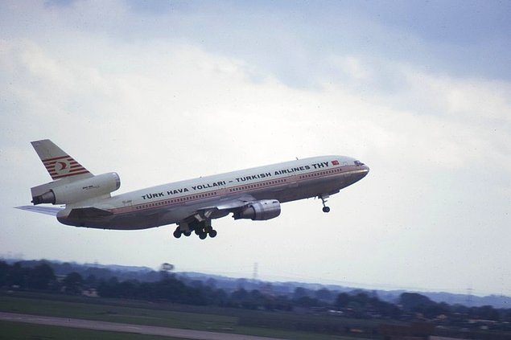
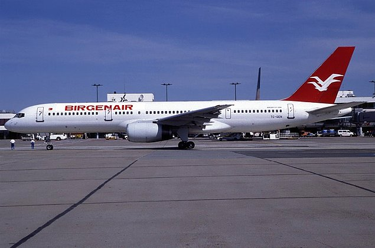
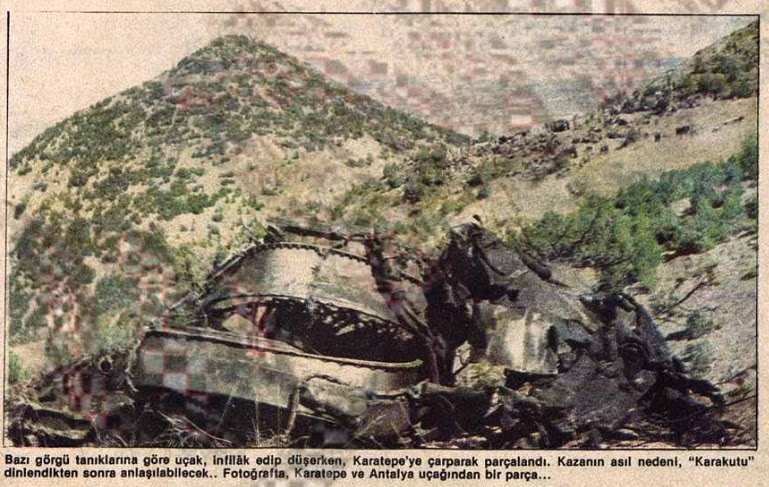
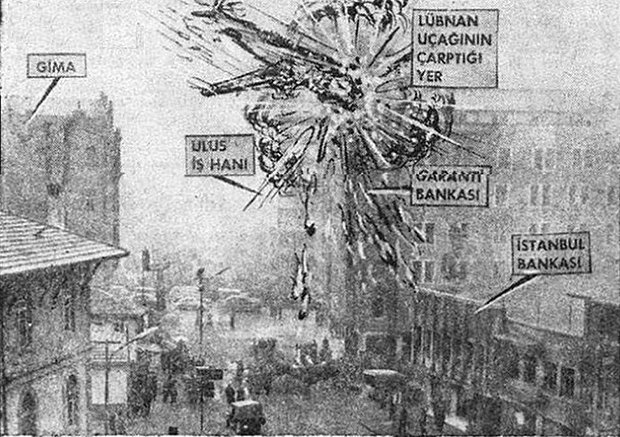
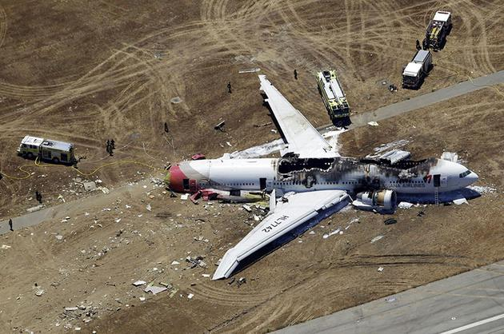

Ana Sayfa Kategori: Uçak Kazaları
Uçak Kazaları
Türk sivil havacılık tarihinde yaşanmış en büyük uçak kazaları!
Bu listemizde sizler için Türk sivil havacılık tarihinde yaşanmış en büyük uçak kazalarını listeledik. İşte detaylar...
Havacılık çok eski dönemlerden beri ülkemizde merak duyulan ve gelişen bir sektör. Havacılık sektörünün belki de kilit taşı konumu kabul edilen Hezarfen Ahmed Çelebi’nin Galata Kulesinden yaptığı uçuşla birlikte Türklerin de havacılık dünyasında olduğu kabul edildi. Tabii güzel gelişmelerin yanında çok büyük trajediler de yaşandı. Bir daha yaşanmaması dileğiyle işte Türk sivil havacılık tarihinde yaşanmış en büyük uçak kazaları…
Bir daha yaşanmamaları dileğiyle işte en büyük Türk sivil havacılık kazaları listesi!
1- 3 Mart 1974/ Türk Hava Yolları İstanbul-Paris-Londra seferi/ 346 ölü

3 Mart 1974 tarihinde THY belki de Türk Havacılık tarihindeki en trajedik olayın başrol oyuncusu
olacağını bilmeden İstanbul’dan havalandı. İstanbul-Paris-Londra şeklinde aktarmalı uçuşunu
gerçekleştirecek olan TC-JAV tescilli Amerikan yapımı McDonnell Dougles DC-10 tipi uçak Paris Ory
Havalimanından kalkışını yaparken kargo kapağı açıldı. Ve ardından hem Türk hem de dünya havacılık
tarihindeki en trajedik olay yaşandı. 346 kişi hayatını kaybetti.
2- 6 Şubat 1996/ Birgen Air Atlas Okyanusu/ 189 ölü

Bir dönem Birgen Air adında çok ortaklı charter uçuşlar düzenleyen bir Türk havacılık şirketi vardı. Birgen
Air düzenli seferlerden ziyade servis işi yapan otobüs firmaları gibi talep oldukça seferler düzenliyordu.
Bu yüzden de çoğu zaman Birgen Air uçakları haftalar boyunca apronda park şeklinde bekliyordu. Yine
böyle bir dönemde Birgen Air’ın TC-GEN tescilli Boeing 757’si de apronda yattı.
Pitot tüpleri kapatılmayan uçak apronda sessiz sedasız beklerken uçağın başka ziyaretçileri oldu. Pilot
tüpleri açıkta olan uçağın tüplerine arılar yuva yaptı. Bu yuvalanma sebebiyle uçak kalkışını yaparken
pilotlar hız ve irtifa hakkındaki bilgileri hatalı aldı ve alçakta kalan Atlas Okyanusu açıklarında çakıldı.
3- 19 Eylül 1976/ Türk Hava Yolları Isparta/ 154 ölü

19 Eylül 1976 yılında Türk Hava Yolları’na ait TC-JBH tescilli Boeing 727 tipi uçak İstanbul-Antalya seferini
yapmak için havalandı. Isparta yakınlarına gelen uçağın kaptan pilotu Isparta çevre yolunun ışıklarını
Ankara Esenboğa havalimanının pist ışıkları zannederek uçağı inişe geçirdi. Durumu Antalya havalimanı
kulesi bildirse de uçak gerekli irtifaya ulaşamadı ve Isparta’nın Karatepe ilçesinde bir tepeye çakıldı.
Olayda 154 kişi hayatını kaybetti. Bugün halen daha Isparta Karatepe mevzisine gittiğinizde uçağın
enkazından kalan parçaları bulabilirsiniz.
4- 1 Şubat 1963/ Middle East Airlines Ankara / 100+ ölü

1 Şubat 1963 tarihinde Ankara semalarında her zamanki gibi havacılık okulu eğitim uçuşlarını yapıyordu.
O döne C-47 tipi askeri uçaklarla eğitim uçuşları yapılıyordu. Ancak 1 Şubat 1963 tarihinde işler ters gitti.
Eğitim uçuşunu yapan C-47 uçağı ve tarifeli seferini düzenleyen Middle East Airlines’a ait Vickers
Viscount tipi yolcu uçağı havada çarpıştı.
Enkazlar Ankara’nın tam göbeğine düştü. Olayda kesin bir ölü sayısı yok ancak gerçekten kafasına uçak
düşerek ölen ilk insanlar tarihe bu olayla geçtiler. Ayrıca bu olay Ulus Faciası olarak adlandırılmaktadır.
5- 8 Ocak 2003/ Türk Hava Yolları Diyarbakır/ 75 ölü

8 Ocak 2003 tarihinde Türk Hava Yollarının TC-THG tescilli Avro RJ 100 tipi uçak İstanbul-Diyarbakır
seferini yapmak üzere havalandı. Yolculuk sırasında bir sıkıntı yoktu ancak yolculuğun iniş aşaması
geldiğinde havada yoğun sis vardı. Bu sebeple pilotlar önlerini göremediler. Araziye çakılan uçaktaki
yolculardan 5’i ağır yaralandı ve 75 tanesi hayatını kaybetti.

Bu gurur hepimizin daha iyi olması için elimizden geleni yapmamız gerekir.Türk Sivil Havacılığı artık gerçek bir marka.
Bence uçaktaki koltuk sayıları daha da arttırılmalı. Böylelikle yakıt tüketimi azaltılabilir.
Yabancı ülkelerden almak yerine kendimiz üretmeliyiz. Yerli savunma sanayi desteklenmeli.
Bü yüzden uçmaya korkuyorum.
Derin devlettten gelen bilgiye göre bu dış güçler bizim gücümüzü kıskanıyor ve Osprey'leri daha da geliştirmek için yere indirdi.